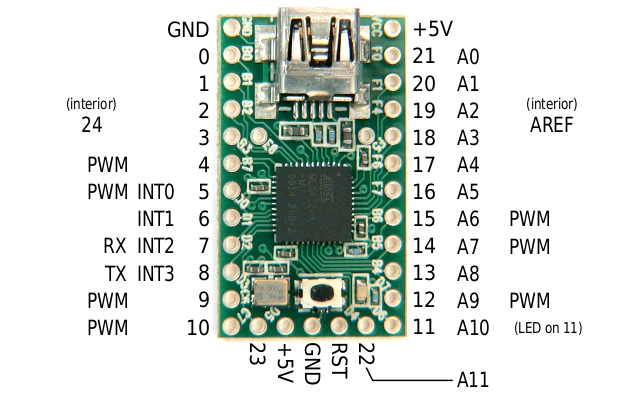

Que vous ayez ou pas entendu ces mots : "informatique embarquée", vous pouvez être sûr d'en avoir déjà utilisé : sous ce nom barbare se cache les systèmes contenus dans des objets comme : un téléphone, une voiture, un PDA, un routeur, une console de jeu ... mais aussi une machine à laver, un four micro-onde, un pacemaker...
A l'intérieur de ces appareils se trouve souvent une carte que l'on pourrait comparer à une carte mère en informatique traditionnelle. Il en existe de toutes les tailles & forme :
...
Nous allons ici nous intéresser aux cartes Teensy, dont voici un aperçu :
Carte teensy 2.0 ++
Carte Teensy 2.0 Pour donner un ordre d'idée, celle-ci tient sur la dernière phalange de mon pouce.
La puce noire que vous voyez au centre de chacune de ces cartes est un processeur AVR. Comparativement, celui de votre PC est plusieurs milliers de fois plus puissants. Vous avez certainement remarqué le port USB à gauche : il va servir à flasher (programmer) la carte ; Il pourra aussi nous servir occasionnellement comme interface avec l'ordinateur. Enfin, les trous numérotés de part et d'autre de la carte ne sont pas juste de fixation : ce sont des contacts électroniques, qui permettent au teensy d'interagir avec le monde extérieur.
Vous l'aurez certainement deviné, il est plus courant d'utiliser un teensy pour mener à bien un projet, que d'adapter son projet pour y inclure ce composant : je vous conseille donc d'avoir une idée de ce que vous voulez faire avec (Pas d'idée ? Sachez que même avec un minimum d'effort, votre PC pourra effectivement commander votre cafetière :D Avis aux amateurs !).
Programmer sur une carte teensy
Il existe deux possibilités pour programmer sur une carte Teensy : utiliser un crosscompilateur AVR, ou un environnement dédié Arduino. j'ai choisi la seconde solution, parce qu'elle est plus facile pour une première expérience de ce genre de carte d'interface, mais elle présente des défauts (pas de possibilité d'utiliser l'USB à pleine vitesse).
Il vous faudra donc maitriser les bases du C/C++ (au moins les deux premières parties du tuto officiel C).
Téléchargez la dernière version de l'environnement Arduino à cette adresse : arduino.cc. Si vous êtes sous Windows, le programme sera distribué sous forme de fichier zip. Décompressez-le dans le dossier de votre choix, évitez cependant qu'un espace soit présent dans le chemin du dossier.
Vous aurez ensuite besoin du programme Teensy Loader, disponible à cette adresse. Choisissez la version correcte selon votre système d'exploitation. Je vous conseille d'enregistrer le fichier exécutable dans le même dossier qu'Arduino.
Enfin, la dernière étape est l'installation du plugin Teensyduino pour Arduino, qui permet de programmer le Teensy directement depuis l'IDE arduino. Vous pourrez le récupérer par ici. Lors de son installation, on vous demandera où vous avez installé Arduino : indiquez le dossier (qui doit être sous la forme arduino_XXX).
Pour pouvoir tester la carte, nous aurons besoin de ces fichiers de test. Extrayez-les où bon vous semble, nous en aurons besoin bientôt.
Test de l'installation
Branchez votre teensy par le port USB : si c'est la première fois que vous l'utilisez, la diode devrait clignoter lentement. Ouvrez le programme teensy loader (L'exécutable s'appelle très probablement teensy.exe) :
Cliquez sur le premier bouton : une fenêtre de sélection de fichiers s'ouvrira. Choisissez, dans les fichiers de texte que je vous ai fait télécharger, blink_fast.hex. Appuyer ensuite sur le bouton de votre teensy (si, sous windows, une fenêtre vous demande quoi que ce soit pour des driver, ne faites rien ou annulez). La fenêtre du teensy loader devrait ressembler à cela :
Vous pouvez maintenant appuyer sur le deuxième bouton ("program") puis le troisième ("reboot") : votre teensy clignote maintenant plus rapidement ! Nous avons, grâce au Teensy Loader, flashé (reprogrammé) le teensy. Plus que quelques clics et vous pourrez programmer.
Arduino
Gardez le Teensy Loader ouvert, puis lancez Arduino(arduino.exe). Voici l'interface. J'ai indiqué les boutons à retenir.
Encore un dernier réglage : dans le menu Tools>>Board, choisissez votre teensy : 2.0 ou 2.0 ++.
Utiliser Arduino
La grande zone de texte au centre de l'IDE est l'endroit où vous écrirez votre code. La console au bas de l'écran vous affichera les erreurs. Vous devez garder Teensy Loader ouvert durant l'utilisation de Arduino, de même laissez votre carte teensy branchée.
Nous allons tester l'IDE : entrez le programme suivant ci-dessous . Prenez garde à adapter la première ligne de code :
Pressez le bouton "Compile" (symbole "Play"). Une fois le message :
Binary sketch size: 2298 bytes (of a 32256 byte maximum)
apparu dans la console, mettez la fenêtre Teensy loader au premier plan : appuyez sur le bouton de votre carte Teensy : après quelques secondes, vous devriez voir votre teensy clignoter lentement, une illumination par seconde.
Dans chaque programme, vous retrouverez au moins 2 fonctions : setup et loop. la première s'exécute une fois, au début de l'exécution du programme. Elle est souvent utilisée pour initialiser les variables et le matériel. La fonction loop est appelée en boucle une fois que la fonction setup est terminée. Vous pouvez bien sûr créer les fonctions que vous souhaitez en plus de celle-ci.
Le programme minimal qui-fait-rien est donc celui-ci :
void setup() {
// Exécuté une fois
}
void loop()
{
// Exécuté en boucle
}
Envoyez-le sur votre carte.
Matériel conseillé
Lors des prochains chapitres, nous allons utiliser pleinement le Teensy, ce qui requiert un minimum de matériel :
Du fil électrique monobrin (c'est plus pratique), pour utiliser les contacts/trous
Un multimètre (très pratique pour le débogage)
Des DEL 1.2V classiques avec des résistances (la tension typique utilisée par Teensy est de l'ordre de 5 volts).
Il est temps pour les entrées/sorties numériques d'entrer en action ! (il s'agit des "trous numérotés") Arduino n'utilise pas la même notation que le constructeur pour nommer ces trous (que je nommerais maintenant de leur nom anglais : pin). Voici donc des schémas très précieux qui font correspondre chaque trou physique à un numéro utilisé par arduino. Je vous conseille de garder sous les yeux :

Nous allons maintenant réexaminer le programme de test que vous avez utilisé sans comprendre au chapitre précédent :
La ligne 1 est des plus simples : nous affectons une variable de type int nommée ledPin. Prenez le temps de changer sa valeur selon votre carte.
L'instruction exotique suivante est :
pinMode(ledPin, OUTPUT);
Cette instruction initialise la pin passée en premier argument selon le comportement donné en deuxième argument. J'ai utilisé ledpin comme premier argument : j'aurai pu faire directement pinMode(13, OUTPUT); . Vous pouvez à tout instant changer le mode d'une pin.
Les différents modes sont :
INPUT
La pin pourra recevoir des données. Vous ne pourrez pas effectuer d'écriture dessus.
OUTPUT
La pin servira à la sortie (à l'écriture). Pas de lecture.
La deuxième instruction cryptique est :
digitalWrite(ledPin, HIGH);
Il s'agit d'une instruction permettant d'écrire sur une pin passée en premier argument. Les pins ne peuvent prendre que 2 états : il s'agit de sorties numériques et non analogiques (nous les verrons plus tard). L'état HIGH correspond au 1 binaire, LOW au 0. En matière de tension, il s'agit respectivement de +5V et 0V.
L'instruction delay() est tout simplement une demande d'attente en millisecondes.
Ainsi, ce programme va faire clignoter la LED du teensy : la PIN 11 (ou 6, selon modèle) est reliée à celle ci.
Lecture de valeur
Voici un autre programme :
int ledPin = 11; //tensy 2: 11 Teensy 2++ : 6
int inPin = 7;
int val = 0;
void setup()
{
pinMode(ledPin, OUTPUT);
pinMode(inPin, INPUT);
}
void loop()
{
val = digitalRead(inPin);
digitalWrite(ledPin, val);
}
La seule instruction inconnue est digitalRead. Elle prend comme argument une pin, et renvoie sa valeur, qui peut être égale à la macro HIGH ou LOW.
Essayer de penser au programme, trouver ce qu'il fait. Ensuite, ouvrez le volet ci-dessous pour avoir une explication. (Vous pouvez bien entendu le faire fonctionner sur votre teensy.)
Le programme lit la valeur de la pin 7 (inPin), puis passe cette valeur à la pin 11 ou 6, selon votre définition de ledPin. Ainsi, le statut de 7 sera répercuté sur la led. Pour allumer la led, vous pouvez brancher la pin 7 à une pin +5V
Le port série est un objet. Ainsi, pour démarrer une connexion :
Serial.begin(9600);
L'objet représentant le port série est Serial. Nous lui avons demandé de lancer la communication à 9600 bauds. Vous pouvez ouvrir le moniteur série Arduino, et vérifier que vous avez bien la même valeur (si ce n'est pas le cas, changez-la pour 9600).
On peut ensuite envoyer des lignes de texte sur la liaison série :
Serial.println("Hello Computer"); // println() ajoute le \n final
Serial.print("Hello Computer\n"); // La même chose avec print()
Essayez le programme suivant :
Compilez le programme, appuyez sur le bouton, attendez son chargement. Dans l'IDE, choisissez le port COM correspondant à votre teensy (habituellement, sous windows, c'est COM2 ou COM4, cela dépend grandement de votre PC. De même pour Linux ou les ports sont de la forme /dev/ttyUSBx). Ouvrez ensuite le serial monitor :
Tutorial by Nomaintener
Hello from teensy !
Tutorial by Nomaintener
Hello from teensy !
Tutorial by Nomaintener
Hello from teensy !
Tutorial by Nomaintener
Hello from teensy !
Tutorial by Nomaintener
Hello from teensy !
print() et println() fonctionnent comme printf() , vous pouvez passer des arguments en plus pour afficher par exemple des variables :
int i = 0;
void setup() {
Serial.begin(9600);
}
void loop()
{
while(1)
{
Serial.println("La variable i vaut %d",i);
delay(1000);
++i;
}
}
Réception série
Toujours via l'objet Serial, vous pouvez recevoir des données. Cependant, celles-ci n'arrivent pas à intervalle fixe : vous devez vérifier s'il en arrive via Serial.available() . Cette fonction renvoie le nombre d'octets disponibles pour lecture. Le squelette de programme lisant la liaison série est donc :
Les interruptions sont utiles pour traiter les données lors de leurs arrivées, sans perdre ni temps ni données. Prenons l'exemple d'un bouton poussoir : pour être sûrs de ne manquer aucune pression, nous pourrions lire en boucle la pin correspondante. Malheureusement, cela ne suffit pas : si le programme effectue une autre opération, il est possible qu'il perde trace de certains appuis. Les interruptions sont aussi une solution plus élégante à ce problème : lorsqu'une pin d'interruption change d'état, le flot d'exécution principal est interrompu, une fonction spécifique est lancée, et l'exécution reprend juste après le retour de celle-ci.
Seule certaines pins sont susceptibles de déclencher des interruptions : elles sont notées INTx (x allant de 0 à 3) sur le schéma des pin :
Pour mieux comprendre, voici un programme simple mais complet :
int pin = 13;
volatile int state = LOW;
void setup()
{
pinMode(pin, OUTPUT);
attachInterrupt(0, blink, CHANGE);
}
void loop()
{
digitalWrite(pin, state);
}
void blink()
{
state = !state;
}
Si vous exécutez ce code, vous constaterez que tout changement dans l'alimentation de la pin INT0 entrainera le changement d'état de la diode.
L'instruction à retenir est attachInterrupt(0, blink, CHANGE); : elle permet d'associer une fonction (blink, recu en deuxième argument) avec une pin d'interruption (le 0 du premier argument signifie INT0), suivant un mode particulier (l'interruption sera déclenchée lors d'un changement, comme le précise le mot clé CHANGE).
Selon la situation, différents modes de déclenchement de l'interruption sont disponibles :
Mode (3ème argument de attachInterrupt)
Description
LOW
L'interruption sera déclenché si la pin est dans l'état LOW
CHANGE
L'interruption sera déclenché si la pin change d'état (de LOW à HIGH ou le contraire)
RISING
L'interruption sera déclenché si la pin passe de l'état LOW à HIGH
FALLING
L'interruption sera déclenché si la pin passe de l'état HIGH à LOW
Remarques
Les variables susceptibles d'être modifiées ou lues lors d'une interruption doivent être déclarées volatile :
volatile int state = LOW;
De par la nature des interruptions, les fonctions à caractère temporel (delay() et millis() ) ne fonctionneront pas pendant une interruption.
Je vais présenter dans cette annexe certains composants et actionneurs qui pourront vous être utiles dans la réalisation de vos projets.
Résistance
Une résistance est un composant électronique ou électrique dont la principale caractéristique est d'opposer une plus ou moins grande résistance (mesurée en ohms) à la circulation du courant électrique.
On l'utilise souvent pour "protéger" des composants d'une tension trop forte. Le calcul permettant de déterminer quelle résistance est adaptée se fait par la Loi d'Ohm (U = R*I)
DEL/LED
Pas grand chose à dire, si ce n'est à propos de leurs polarités : la patte la plus longue correspond au + (On peut aussi se repérer au coté plat, qui est le -)
Relais
C'est un appareil très pratique : il permet de séparer la partie commande (la carte Teensy) de la partie puissance (les autres appareils). Prenons l'exemple d'une source de courant à 30V : un passage par le Teensy le détruirait, c'est pourquoi on le commute via un relai, qui est commandé par la carte. Pour de plus ample information sur son fonctionnement interne, voir la page wikipedia.
Note : un relais peut être parfois avantageusement remplacé par un triac bien plus petit en taille.
Afficheur 7 segments
Ce sont de petit appareils conçu pour afficher un chiffre. Leur utilisation est généralement très simple, en se reportant à la documentation fournit avec.
Note : il existe aussi des afficheurs 14 segments pour afficher lettres & chiffres.
Vous voici doté du bagage minimum pour programmer votre teensy (et plus largement tout matériel compatible Arduino). Cependant, l'informatique embarquée est un sujet bien plus vaste : voici quelques pistes à explorer pour continuer sur cette voie :

{kind=link}
{kind=link}
{kind=link}